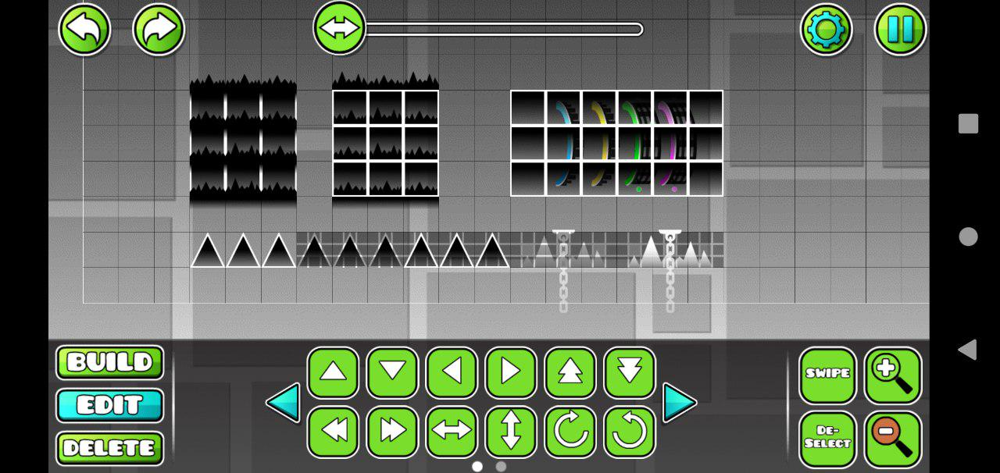

This article contains info on how randomness works in this game.
There's 1 random seed per level that is generated randomly on each attempt (the seed stays the same when restarting from checkpoint).
GD's randomness uses the standard rand() function from C++. An accurate reimplementation of C++'s PRNG in Python can be found here.
4 triggers utilize this seed: Random, AdvRand, Advanced Follow and Edit AdvFollow.
This one is actually pretty simple to reverse engineer without even reverse engineering the game, as long as you have Mega Hack v8.
It works as follows: if (rand() / 32767 * 100) is less than or equal to the chance value, activate group 1. Otherwise, activate group 2.
This one, on the other hand, is more complicated.
Here's an implementation in JavaScript (weights is an array of all chances for each group):
function advancedRandom(weights) {
let value = rand() / 32767 * weights.reduce((a, b) => a + b)
let num = 0
for (let i = 0; i < weights.length; i++) {
num += weights[i]
if (num >= value)
return i + 1;
}
return NaN
}TODO: ADD IMPLEMENTATION
It calls rand() for every non-zero +- value
TODO: ADD IMPLEMENTATION
It calls rand() 3 times, and 1 extra time if Speed +- is not 0
In each of the layers, the objects that are rendered last take priority (and usually that matches up with their order in the level string)
